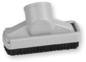

Limpeza profunda e rápida.

Possui pedal de acionamento
da escova para auxiliar a
limpeza em pisos frios.
Aumentam o alcance do aspirador em pisos,
tetos e cortinas.
Alcança os locais de difícil acesso,
como frestas e cantos de sofá.